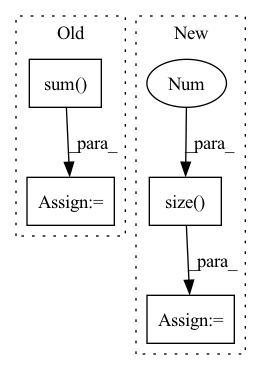

Pattern ID :2969
Before Change
def forward(self, x, neighbor):
fadj = self.feature_adjacency(x, neighbor)
self.adj += fadj.sum( 0)
x = self.feat1(x, fadj)
x = self.acvt1(x)
x = self.feat2(x, self.adj)
x = self.acvt2(x)After Change
def forward(self, x, neighbor):
fadj = self.feature_adjacency(x, neighbor)
adj = self.row_normalize(self.adj.sqrt()) + torch.eye(x.size(-1 ) ,device=x.device)
x = self.feat1(x, fadj)
x = self.acvt1(x)
x = self.feat2(x, fadj)In pattern: SUPERPATTERN
Frequency: 3
Non-data size: 4
Instances Fragment ID: 9914740
Project Name: wang-chen/lgl
Commit Name: 8301c0340a820f10327286d4fbe47b2ee06aca13
Time: 2020-05-12
Author: jeffsan@gmx.com
File Name: models.py
M Class Name: Net
N Class Name: Net
M Method Name: forward(3)
N Method Name: forward(3)
M Parent Class: nn.Module
N Parent Class: nn.Module
M File Name: models.py
N File Name: models.py
M Start Line: 49
M End Line: 53
N Start Line: 53
N End Line: 57
Before Change
p = self.projection(c_onehot)
x += torch.sum( p * h, dim=1, keepdim=True)
return x
After Change
in_prod = p * h
x = x.view(x.size(0 ) , -1)
x = torch.mean(x, dim=-1) + torch.mean(in_prod, dim=-1)
return x Fragment ID: 9914739
Project Name: samuelbroughton/stargan-voice-conversion-2
Commit Name: 26484a2db5a00247535c7ec7c1f97c10e711e022
Time: 2020-09-01
Author: broughtonjsam@gmail.com
File Name: model.py
M Class Name: Discriminator
N Class Name: Discriminator
M Method Name: forward(4)
N Method Name: forward(4)
M Parent Class: nn.Module
N Parent Class: nn.Module
M File Name: model.py
N File Name: model.py
M Start Line: 193
M End Line: 208
N Start Line: 190
N End Line: 206
Before Change
z = x * torch.exp(s) + t
// Reverse order, so if we stack MAFs, correct things happen.
z = z.flip(dims=(1,)) if self.parity else z
log_det = torch.sum( s, dim=1)
return z, log_det
def inverse(self, z):
// we have to decode the x one at a time, sequentiallyAfter Change
def forward(self, z):
// we have to decode the x one at a time, sequentially
x = torch.zeros_like(z)
log_det = torch.zeros(z.size(0 ) )
z = z.flip(dims=(1,)) if self.parity else z
for i in range(self.dim):
st = self.net(x.clone()) // clone to avoid in-place op errors if using IAF Fragment ID: 9914737
Project Name: janosh/torch-mnf
Commit Name: 89ce9b3eb1de8e735e68602768c84ad28cbdd251
Time: 2020-08-23
Author: janosh.riebesell@gmail.com
File Name: torch_mnf/flows/maf.py
M Class Name: MAF
N Class Name: MAF
M Method Name: forward(2)
N Method Name: forward(2)
M Parent Class: nn.Module
N Parent Class: nn.Module
M File Name: torch_mnf/flows/maf.py
N File Name: torch_mnf/flows/maf.py
M Start Line: 33
M End Line: 39
N Start Line: 43
N End Line: 51